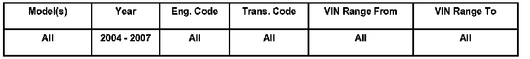
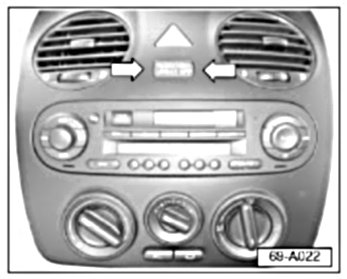
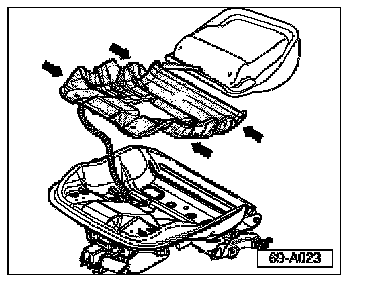
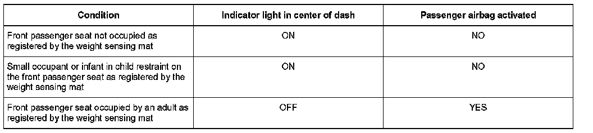

Air Bag System - Description, Passenger Side Air Bag
Condition
69 07 01 Feb. 15, 2007 2005494 Supersedes T.B. Group 69 number 03-02 dated October 7, 2003 due to updated information.
Advanced Airbag System Description, Passenger Side Airbag
"PASSENGER AIR BAG OFF" indicator light in center dash cover may stay ON depending on passenger seat occupancy as registered by the weight sensing mat.
Technical Background
Additional advanced airbag system feature which meets federal motor vehicle safety standard.

Tip: This picture represents New Beetle and New Beetle convertible. The Air bag OFF indicator light may look different or may be in a different location on other models.
Starting with 2004 model year New Beetle and New Beetle Convertible may be equipped with a dual stage front " Advanced Airbag System" . The airbag system complies with the " suppression" requirements of the safety standard to turn off the front passenger airbag according to the United States Federal Motor Vehicle Safety Standard (FMVSS) 208.

Weight of passenger is detected via a weight sensing mat in the seat (arrows).
NOTE:
The arrows indicate the weight sensing mat itself, not the actual sensor. For more information see Repair Manual Repair Group 69 - Passenger protection - Airbags, Seat belts - Airbag - Seat sensors (USA), assembly overview.
Production Solution
No production change required.
Service
To prevent unneeded diagnosis or repair, prior to working on any passenger side airbag concerns review the Operational rules for passenger front airbag for applicability.
Operational rules for passenger front airbag:

NOTE:
If the passenger airbag is deactivated, the "PASSENGER AIR BAG OFF" light will come ON and stay ON.
Tip: For more information, see Airbag System section in the Owners Manual.
Warranty
Information only.
Required Parts and Tools
No Special Parts required. Always see ETKA for the latest part(s) information.
No Special Tools required.